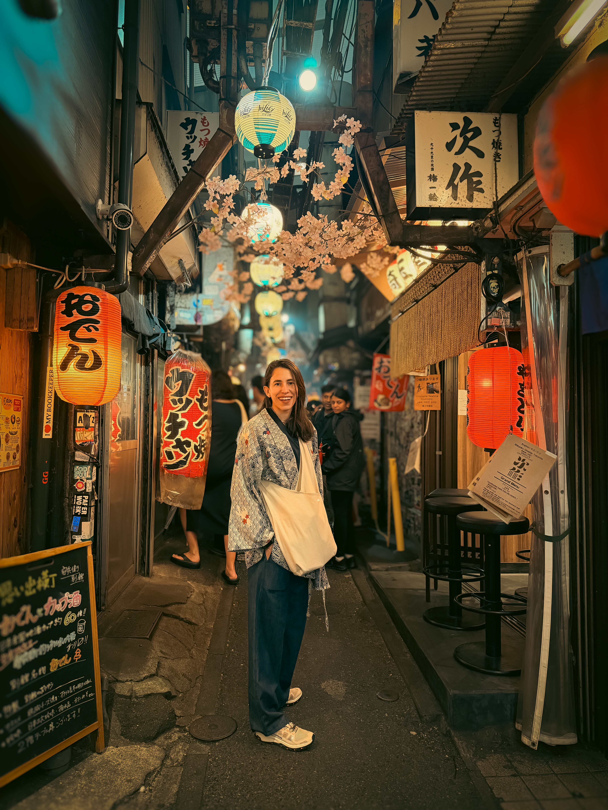

The Andy Lab · Viaje · Comida · Movimiento
La guía que uso cuando viajo.
Un viaje no debería arruinar tu progreso ni llenarte de culpa.
Documento · Edición 2026
Antes de empezar · The Philosophy
El punto de partida
Viajo bastante. Por trabajo en salud pública global, por placer, porque entender el mundo es mi forma de aprender. Y durante años el viaje fue mi excusa favorita para mandar todo de paseo: la comida, el entreno, el sistema entero. Llegaba a una ciudad nueva, comía fatal una semana, no me movía, y volvía sintiéndome como si hubiera empezado de cero.
Empezar de cero cada vez que coges un avión es agotador. No lleva a ningún sitio. Y es completamente evitable.
La idea de esta guía no es que entrenes como en casa ni que comas perfecto en cada aeropuerto. Es que el viaje deje de ser el botón de reset que borra todo tu progreso. Con unas pocas reglas, viajar pasa de ser el agujero negro de tu sistema a ser algo que simplemente gestionas, como cualquier otra cosa.
Te voy a contar exactamente lo que hago yo. Va en dos bloques: el trayecto (el avión, el aeropuerto, esas horas muertas) y el destino (donde lo que decide tu estrategia es cuánto tiempo te quedas, no si vas por trabajo o placer). Cada uno tiene sus reglas. Ninguna incluye odiarte.
Parte 01 de 02 · The Journey
Las horas muertas que casi todo el mundo gestiona mal. Dos decisiones y cambian por completo.
Regla 01
Tu comida, no la del avión
Regla 02
Camina el aeropuerto
The Journey
Regla 01
Primera regla: me llevo mi propia comida. No dependo de lo que haya en el aeropuerto ni de lo que sirvan en el avión. Y que quede claro: amo comer. Amooo comer. Esto no es ascetismo.
Es que la comida de avión es fea. Y me da igual que vayas en business con tu copa de cava. Esa bandeja recalentada no merece tus calorías del día. La comida de aeropuerto tampoco: cara, mediocre, y diseñada para que comas cualquier cosa porque estás aburrida esperando.
Llevarte tu comida resuelve dos cosas. Una, comes algo que te gusta y que cubre tu proteína sin pensar. Dos, le quitas el poder al entorno. Cuando ya tienes tu comida resuelta, los olores del food court dejan de ser decisiones que tomas con hambre y aburrimiento — el peor estado posible para decidir.
Qué llevo, sin complicarme
Nada gourmet. Algo con proteína que aguante sin nevera unas horas y que me apetezca de verdad:
La regla no es que sea perfecto. Es que sea tuyo y que te guste, para no acabar pagando catorce euros por un sándwich triste a las dos de la madrugada.
The Journey
Regla 02
Segunda regla: si tengo tiempo entre el control y el embarque, no me siento a esperar. Camino. Un viaje es horas y horas de estar sentada: el trayecto al aeropuerto, la espera, el vuelo, el trayecto al hotel.
Tu cuerpo no está hecho para eso. Te hinchas, te agarrotas, llegas peor de lo que saliste. Caminar por el aeropuerto rompe esas horas de quietud. No es entrenamiento; es lo contrario de estar inmóvil, que ya es muchísimo.
Mover las piernas activa la circulación, ayuda con la hinchazón, y te baja el nivel de "zombi de aeropuerto" con el que normalmente llegas.
Caminar siempre viene bien, aunque sea arrastrando una maleta con una rueda rebelde.
Parte 02 de 02 · The Destination
Dos modos: corto y largo. La regla que funciona para un fin de semana no funciona para dos semanas.
Modo 01
Viaje corto · 3–4 días
Modo 02
Viaje largo · 1 semana+
The Destination
Viaje Corto
La regla general
Tres o cuatro días, sea por trabajo o por placer. La regla aquí es la misma: no entrenas. Tres días sin entrenar no son el fin de absolutamente nada. Buscar un gimnasio en un viaje tan corto es gastar energía en algo que no cambia el resultado.
Lo que sí cambia según para qué viajas es la comida. Y ahí hay dos modos distintos.
Si es vacaciones
No voy a renunciar a la comida del sitio al que fui a disfrutar. La vida es esto también.
Pero soltar el volante no es caos: mantengo en automático dos reglas que ya tengo tan interiorizadas que no me cuestan ningún esfuerzo.
Automático 01
Proteína primero
En cada comida, identifico la proteína y empiezo por ahí. Sacia, y deja menos hueco para arrasar con el resto.
Automático 02
Elijo mi comida pesada del día
Una es la protagonista, las demás acompañan. No convierto las tres comidas en festines simultáneos.
Con eso vuelvo de una escapada habiendo disfrutado de verdad y sin la sensación de haber descarrilado.
Si es trabajo
El viaje de trabajo corto tiene una trampa: el buffet del hotel. Desayuno buffet, a veces cena buffet, y la sensación de que como ya pagaste hay que aprovechar. Aquí no hace falta fuerza de voluntad, hace falta entender un mecanismo.
El mecanismo: saciedad sensorial específica
Cuando comes un solo alimento, el placer va bajando bocado a bocado hasta que te sacias. Pero en cuanto aparece un sabor nuevo, tu apetito revive de golpe.
El buffet es eso a escala industrial: cada pocos bocados hay algo distinto, así que nunca te habitúas a nada y el freno de la saciedad llega tarde. Es el mismo mecanismo del "segundo estómago" para el postre.
La solución es simple:
Elijo tres cosas.
Me ciño a ellas.
Una vuelta al buffet, plato montado con criterio (proteína primero), y a sentarme.
Probablemente acabo igual de llena, con la mitad de las calorías y sin la modorra del que comió por seis.
The Destination
Viaje Largo
Aquí sí me organizo
Una semana, dos o más. No puedo soltar el volante dos semanas sin notarlo, así que me pongo un poco más estricta. Un poco. No me vuelvo una mártir.
No condiciono el viaje a buscar gimnasio. Si hay, lo uso. Si no, tiro de la habitación.
Cuatro ejercicios, tres series, veinte minutos. Sin pensar. Sin material. Exactamente lo que quiero cuando estoy cansada.
Mi rutina de habitación · Cuando no hay gym
Cuatro ejercicios de peso corporal. Sin material. Cualquier habitación. Te doy los míos, tú puedes elegir los tuyos.
01 · Pike Push-Ups
Hombro · Posición de pica invertida
02 · Sissy Squats
O lunges como versión accesible
03 · Single-Leg Hip Thrust
Una pierna · Espalda en la cama o sofá
04 · Push-Ups
Manos en cama o pared si hace falta
El formato
4 ejercicios · 3 series · 20 minutos
Simple hasta el aburrimiento. Sin pensar, sin material, sin excusas. No voy a construir una espalda nueva con esto: sin carga progresiva no hay grandes ganancias. Pero para mantener músculo en viaje largo, es más que suficiente. Mantener, en viaje, ya es ganar.
Si entrenas porque te apetece, no por obligación: prioriza lo que te haga feliz. Treinta minutos de algo que disfrutas vale más que la sesión perfecta a la que llegas arrastrándote.
The Andy Lab · Cierre
Corto: suelta
Disfrutas, comes con criterio, no entrenas y no pasa nada.
Largo: organízate
La regla del buffet y mover el cuerpo aunque sea en la habitación.
Si tienes un buen sistema, el viaje no debería romperlo. Lo único que lo rompe es creer que, como estás fuera de casa, las reglas no aplican.
No hay que empezar de cero. Solo hay que viajar como alguien que sabe lo que hace. A partir de hoy, ya eres tú.
The Andy Lab · Newsletter
Esta guía resuelve las semanas que pasas fuera. Las otras cuarenta y tantas, donde pasas tu vida normal, son donde se construye el músculo de verdad. Suscríbete a la newsletter para dejar de pelearte con tu cuerpo.
Gratis · Sin spam · Puedes leer en Substack antes de suscribirte.